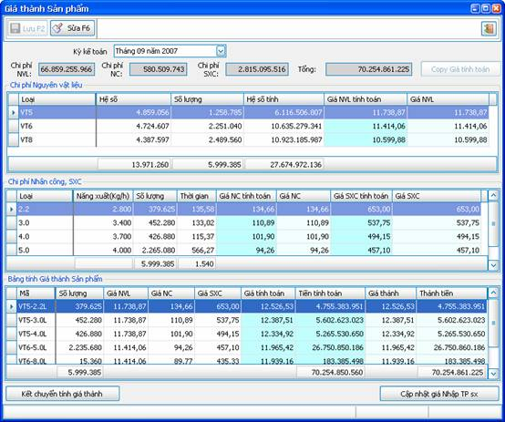
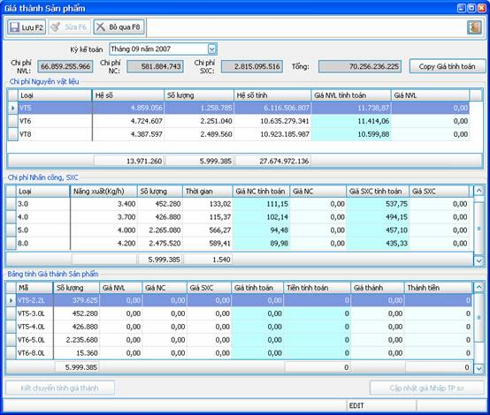

Nghiệp vụ tính giá thành thành phẩm sản xuất có chức năng tính toán, lưu lại thông tin về giá thành thành phẩm sản xuất của từng kỳ kế toán cho từng mặt hàng, cập nhật giá nhập vào các phiếu nhập kho thành phẩm sản xuất trong kỳ.
Từ menu “Giá thành” của chương trình Kế toán, chọn “Cập nhật giá thành”.
Thông tin quản lý:
Mỗi kỳ kế toán, ta có 1 bảng giá thành nhập kho thành phẩm sản xuất bao gồm chi tiết từng mặt hàng và giá nhập kho sản xuất tương ứng.
Các cửa sổ của nghiệp vụ:
Ø Cửa sổ danh sách:

Đây là bảng tính giá thành nhập kho thành phẩm sản xuất của 1 kỳ kế toán. Bạn có thể chọn kỳ kế toán khác để xem bảng tính giá thành nhập kho thành phẩm sản xuất của kỳ kế toán đó.
Ø Cửa sổ nhập liệu:
Từ cửa sổ danh sách, bạn có thể click vào nút “Sửa” để thay đổi giá nhập kho thành phẩm sản xuất của kỳ kế toán đã chọn:

Nếu chưa tạo phiếu kết chuyển chi phí tính giá thành, bạn có thể click vào nút “Kết chuyển tính giá thành” để tạo. Chương trình sẽ tạo phiếu kết chuyển toàn bộ số dư bên nợ của các tài khoản 621, 622, 627 qua tài khoản 631.
Lưới “Chi phí nguyên vật liệu” là bảng phân bổ giá thành theo loại sản phẩm của toàn bộ chi phí nguyên vật liệu trong kỳ. Trong đó, cột “Giá NVL tính toán” là giá mà chương trình tính toán, cột “Giá NVL” là số liệu được công nhận trong kỳ, bạn có thể nhập liệu vào cột này.
Lưới “Chi phí Nhân công, SXC” là bảng phân bổ giá thành theo kích cỡ sản phẩm của toàn bộ chi phí nguyên nhân công và chi phí sản xuất chung trong kỳ. Trong đó, cột “Giá NC tính toán” và cột “Giá SXC tính toán” là giá mà chương trình tính toán, cột “Giá NC” và cột “Giá SXC” là số liệu được công nhận trong kỳ, bạn có thể nhập liệu vào các cột này.
Lưới “Bảng tính giá thành sản phẩm” là bảng phân bổ giá thành tổng hợp của từng thành phẩm. Trong đó, các cột “Giá NVL”, “Giá NC”, “Giá SXC” là các số liệu bạn đã nhập ở trên. Cột “Giá tính toán” là tổng của 3 cột trên. Cột “Tiền tính toán” bằng với giá nhân với số lượng đã sản xuất trong kỳ. Cột “Giá thành” và “Thành tiền” là những giá trị cuối cùng mà bạn công nhận. Do chênh lệch số lẻ nên tổng cột “Thành tiền” sẽ không khớp với tổng chi phí đã phân bổ cho giá thành, bạn có thể tự thay đổi thành tiền của 1 số thành phẩm để cuối cùng tổng cột “Thành tiền” khớp với tổng chi phí phân bổ.
Click nút “Lưu” để lưu lại bảng tính giá thành trong kỳ.
Sau khi đã lưu bảng tính giá thành sản xuất, click nút “Cập nhật giá nhập TP sản xuất” để cập nhật bảng giá bạn đã thông qua vào các phiếu nhập kho thành phẩm sản xuất đã tạo trước đây. Chương trình sẽ cập nhật giá vào phần giá vốn nhập kho của từng thành phẩm, đồng thời cập nhật số tiền định khoản tương ứng.